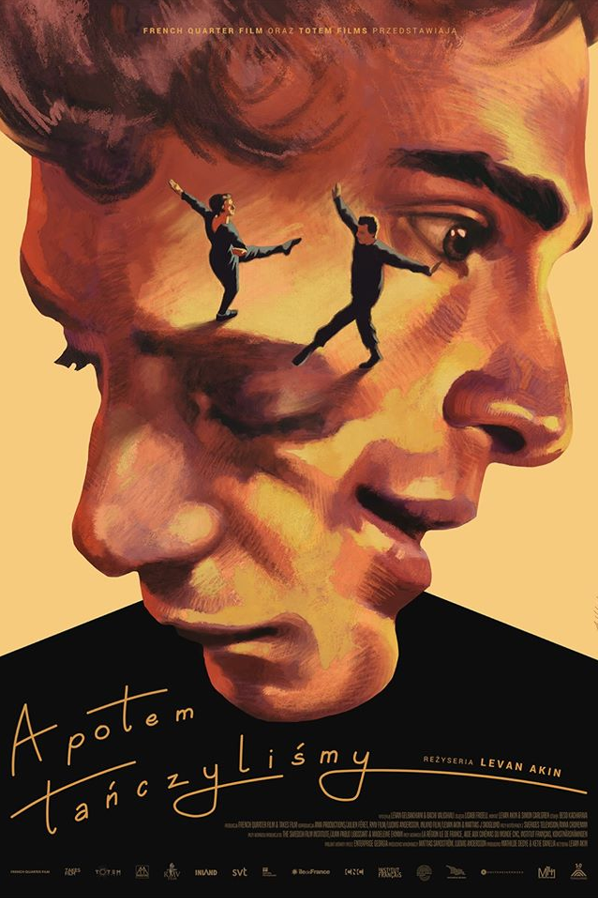

And Then We Danced (2019) - Film Review
- Directed by Levan Akin
- Genres: Romance, Drama
- 6 sept. 2023
And Then We Danced by Levan Akin made me sob my fucking eyes out. This
film is not incredibly well-shot. The film itself doesn't look
amazing. But why? Why do I feel like this? How is it able to make me
feel so much?
The amount of emotion I felt during this film is still inconceivable
to me. I felt all of them. Anger. Sadness. Jealousy. Happiness. Love.
Joy. All of the aforementioned emotions went through my head. Yet, I
still can't put into words how much of it I've felt.
I'm getting a little to ahead of myself though. I haven't even talked
about the film itself yet. The story follows a young Georgian dancer,
Merab, that wants to get into the main ensemble of a certain dance
company. Then we get introduced to Irakli, a new dancer who becomes
his rival, but also his strongest yearning.
This film completely encapsulates you with its story. The story of
this young man finding out where his sexuality lies and how to embrace
his own identity. It tells the story with the highest amount of
purity. It's so genuine, it's so real. The subtleties of emotion you
see in the face Merab are astonishing and it perfectly portrays the
early stages of love and how it develops later on.
Not only does it show love's purity, but it also shows platonic
relationships that just makes me want to cry. It's so wholesome. It's
so nice. Yet, there is one scene that takes the cake. The scene where
hesitance and acceptance are set in the foreground of the film. This
scene made me sob. I couldn't stop crying. Even now, while thinking
and writing about it, I'm crying again.
The performances by Levan Gelbakhiani and Bachi Valishvili are so
genuine. The story they tell through their dialogue, their bodies and
their faces feel so real. It almost feels like I'm following them via
a documentary crew, not even a film.
Yet, all of these emotions wouldn't have been possible without the
accompanying score and the choreography. They make this film what it
is and as the base of the story, it really does an amazing job. I'm so
incredibly impressed.
In conclusion this is my favorite film. It's a film that tells its
story not only through dialogue, but also through choreography, music
and just pure human emotion.